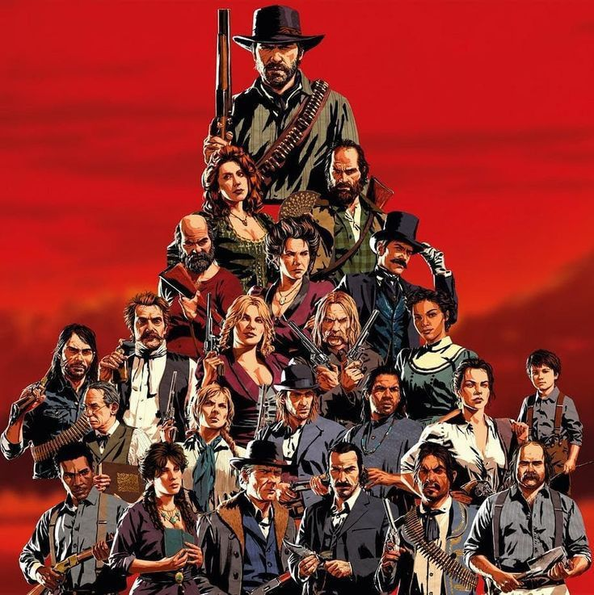
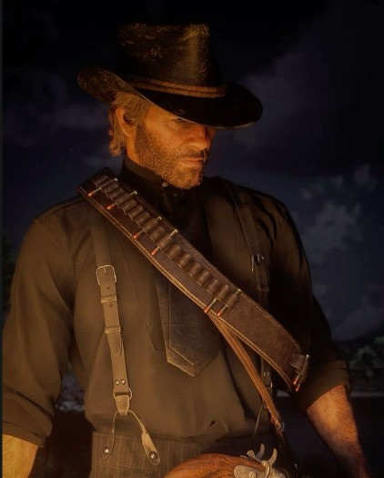
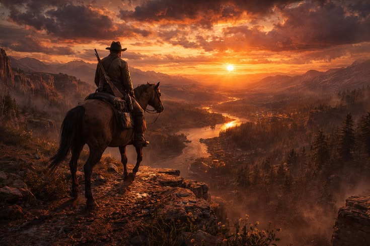

Red Dead Redemption II cuenta la historia de Arthur Morgan y la banda Van der Linde mientras intentan sobrevivir durante el final del salvaje oeste americano.

Dutch lidera a un grupo de forajidos que busca escapar de la ley mientras realizan peligrosos atracos.

Arthur es el protagonista principal y deberá tomar decisiones importantes sobre su vida y su honor.

El juego presenta enormes paisajes, pueblos y montañas que representan el final de la era del oeste.
La historia inicia después de un atraco fallido en la ciudad de Blackwater. La banda Van der Linde debe huir de las autoridades mientras intenta sobrevivir en un mundo que está cambiando rápidamente. Arthur Morgan comienza a cuestionar las decisiones de Dutch y el verdadero significado de la lealtad, la familia y el honor.
Durante la aventura, el jugador explora enormes territorios, ayuda a diferentes personajes y enfrenta intensos enfrentamientos contra bandas rivales y agentes del gobierno. Cada decisión puede afectar la reputación de Arthur y cambiar algunas escenas del juego.
Red Dead Redemption II es considerado uno de los mejores videojuegos de la historia gracias a su increíble historia, gráficos realistas, personajes memorables y un mundo abierto lleno de detalles.
| Dato | Información |
|---|---|
| Año del Juego | 2018 |
| Empresa | Rockstar Games |
| Protagonista | Arthur Morgan |
| Ubicación | Estados Unidos - 1899 |
| Tipo de Juego | Acción y aventura |